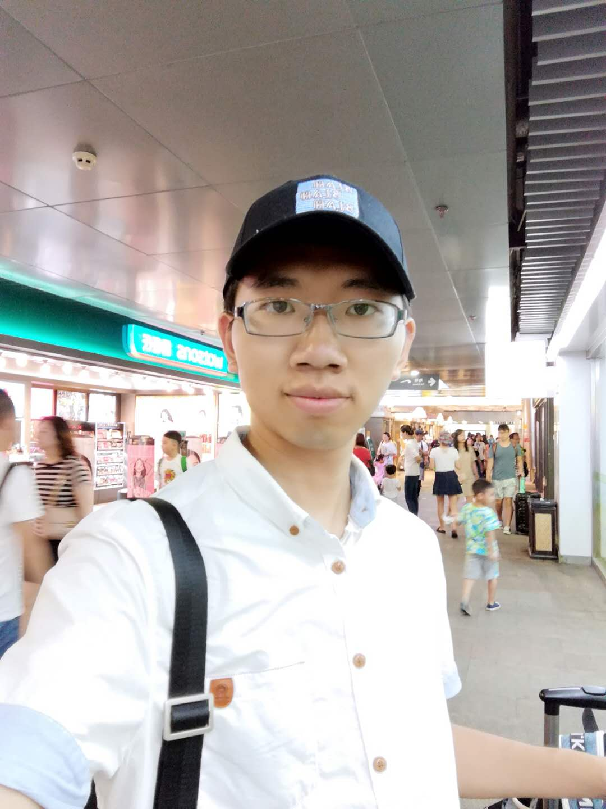

| Heng Guo 郭亨 PhD Student Graduate School of Information Science and Technology Osaka University Email: heng.guo [at] osaka-u.ac.jp [GITHUB] [CV] |
 |
About Me
I am a first-year PhD student in the Multimedia Engineering department at Osaka University, where I am advised by Prof. Yasuyuki Matsushita. Previously I obtained my Master and Bachelor degree in 2018 and 2015, both from University of Electronic Science and Technology of China (UESTC). under the supervision of Prof. Bing Zeng and Prof. Shuaicheng Liu.
News
Publications

Self-calibrating Near-light Photometric Stereo under Anisotropic Light Emission
Heng Guo, Boxin Shi, Michael Waechter, Yasuyuki Matsushita.
In Meeting on Image Recognition and Understanding (MIRU 2020). (Best Student Paper)
[Paper]

View-Consistent MeshFlow for Stereoscopic Video Stabilization
Heng Guo, Shuaicheng Liu, Shuyuan Zhu, Heng Tao Shen, Bing Zeng.
In IEEE Transactions on Computational Imaging (TCI 2018).
[Paper]

Joint Bundled Camera Paths for StereoScopic Video Stabilization
Heng Guo, Shuaicheng Liu, Shuyuan Zhu, Bing Zeng
In International Conference on Image Processing (ICIP 2016) (Oral)
[Paper] [Website]

Joint Video Stitching and Stabilization from Moving Cameras
Heng Guo, Shuaicheng Liu, Tong He, Shuyuan Zhu, Bing Zeng, Moncef Gabbouj.
In IEEE Transactions on Image Processing (TIP 2016)
[Paper] [Website]